CS 184: Computer Graphics and Imaging, Spring 2023
Project 3-1: PathTracer
Michael Lin, Rachel Lee
Overview
In this project, we generated camera rays by transforming normalized image coordinates from image space to sensors in camera space and then transforming the camera ray into a ray in the world space. We also generated pixel samples and implemented the Möller Trumbore algorithm for calculating ray-triangle intersections. Then, using Bounding Volume Heirarchy acceleration we increased the efficiency of the ray-tracing processes by with efficient axis-splitting heuristics. We also implemented different sampling methods in global illumination such as the Uniform Hemisphere Sampling and Importance Sampling which showed the different efficiencies in sampling methods as well as different lighting methods such as direct and indirect lighting for ray tracing. Finally, we also implemented adaptive sampling which helps concentrate the samples in more difficult parts of an image such as the shadow corners of an object.
Part 1
-
Walk through the ray generation and primitive intersection parts of the rendering pipeline.
- To generate the ray, we first transform the normalized input coordinates
(x,y)from the world space to camera space by settingxTransformtox * tan(.5 * radians(hFov)) + (x - 1) * tan(.5 * radians(hFov))andyTransformtoy * tan(.5 * radians(hFov)) + (x - 1) * tan(.5 * radians(hFov)). After transforming the coordinates from image space to sensor in camera space, we then transform thexTransformandyTransformcoordinates into the world space by finding the updated direction and multiplying by the camera-to-world rotation matrixc2w. Then, we create and return a newcameraRayusing the camera position in the world spaceposand updated direction vector while also setting themin_tandmax_tof the ray to be within the bounds of the two clipping planesnclipandfclip. After generating the ray and pixel samples usingraytrace_pixel, we test whether there is an intersection between the triangle and input ray using the Möller Trumbore algorithm and reporting the location of the nearest intersection point. Finally, we check if the found intersection point is within the triangle’s boundaries.
- To generate the ray, we first transform the normalized input coordinates
-
Explain the triangle intersection algorithm you implemented in your own words.
- In
Triangle::intersect, we implemented the Möller Trumbore algorithm by using linear interpolation to calculate the barycentric coordinates and determine if the intersection point of the ray lies within the triangle. First, we found two edges of the triangle py calculating the difference ofp2 - p1andp3 - p1and stored them ine1ande2, respectively. Then we found the distance ofp1from the given ray’s origin and used it to find the cross product between e1 and store this ins1. We also found the cross product between the ray’s direction ande2and store this value ins2. Next, we calculate the inverse of the dot products using:1 / dot(s1, e1) * Vector3D(dot(s2, e2), dot(s1, s0), dot(s2, r.d))and store the result in aVector3D. Finally, we check that the coordinates of the resulting vector are within the range (0,1) and that the intersection that occurs at t lies within themin_tandmax_tof the input array and updatemax_tif necessary.
- In
-
Show images with normal shading for a few small .dae files.
CBEmpty.dae
CBSpheres.dae
banana.dae
Part 2
- Walk through your BVH construction algorithm. Explain the heuristic you chose for picking the splitting point.
- In
BVHAccel:construct_bvh, we first compute the bounding box from the given vector of primitives usingget_bbox()and initialize a newBVHNodewith the bounding box. Then, we check to see if the current node is a leaf node by seeing if there are no more thanmax_leaf_sizeprimitives in the list, and then update the start and end primitive iterators. If the node is an internal node, then we split the primitives into “left” and “right” sections along the longest axis of the bounding box withinbbox.extent. After finding the longest axis for the split, we sort the partitions and check if the left and right subtrees are of equal size to help maximize the bushiness of the tree and help create the shortest primitive tree possible. Since we are splitting two ways, that means the probability on each side should be as close to 0.5 as possible:
- In
sort(axis.begin(), axis.end(), [i](Primitive *lhs, Primitive *rhs){
double lhsAxisValue = lhs->get_bbox().centroid()[i];
double rhsAxisValue = rhs->get_bbox().centroid()[i];
if (lhsAxisValue == rhsAxisValue) {
return lhs->get_bbox().surface_area() < rhs->get_bbox().surface_area();
} else {
return lhs->get_bbox().centroid()[i] < rhs->get_bbox().centroid()[i];
}
});
splitAreas[i] = -totalArea / 2;
for (auto p = axis.begin(); p != axis.end(); p++) {
splitAreas[i] += (*p)->get_bbox().surface_area();
axisSplitPoints[i] = (*p)->get_bbox().centroid()[i];
if (splitAreas[i] > 0) {
break;
}
}
-
If the split point is at the start or end, then we know that all primitives lie on only one side of the split point and can return the current node. Otherwise, we create a new node with updated start and end primitives and recursively call construct_bvh on the new Primitive vector.
-
Show images with normal shading for a few large .dae files that you can only render with BVH acceleration.
CBbunny.dae

cow.dae

CBlucy.dae
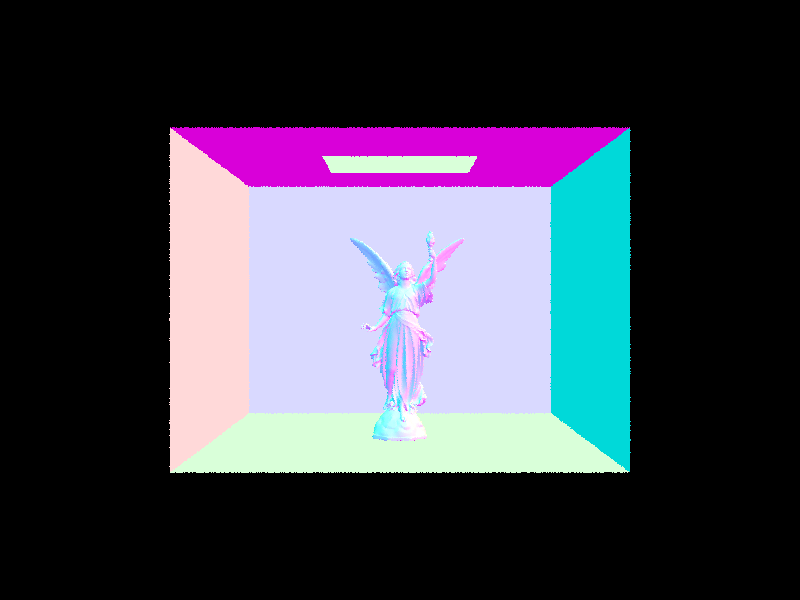
-
Compare rendering times on a few scenes with moderately complex geometries with and without BVH acceleration. Present your results in a one-paragraph analysis.
- Without BVH Acceleration:
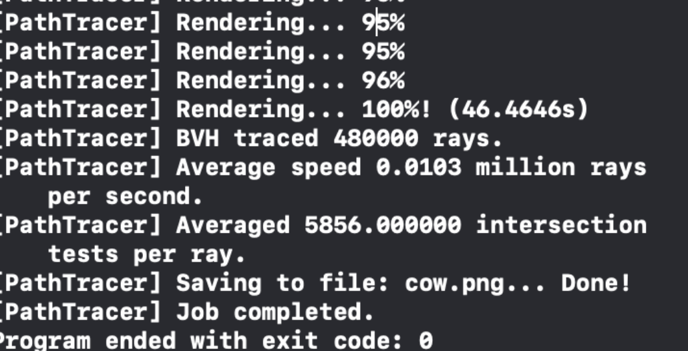 - With BVH Acceleration:
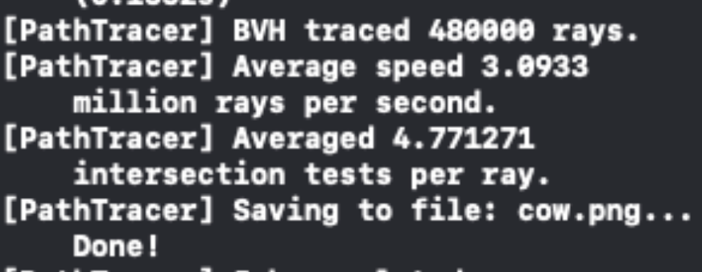 - Clearly, we can distinguish the difference between the average speed of the million rays/second without BVH acceleration and with BVH acceleration and see that the one processed with BVH acceleration was ~30x faster. The average number of intersection tests per ray also significantly decreased which shows the increased efficiency of the ray-tracing algorithm for identifying which bounding boxes intersect with the ray while also eliminating computation time for rays that do not intersect.
- Without BVH Acceleration:
Part 3
-
Walk through both implementations of the direct lighting function.
- In direct lighting with uniform hemisphere sampling, we estimate the direct lighting on a point by sampling uniformly in a hemisphere. First, we make a coordinate space for the hit point
hit_pin the Z direction, aligned with the surface normal N. Then, we iterate through the total number of pixel samples and generate a random direction of the unit hemisphere withhemisphereSampler->get_sample()Then, we create a new ray using the hit point and randomly generated direction and check if it intersects with an object by callingbvh->intersect. We keep track of a running sumL_outof the total lighting emitted and finally return the estimated direct lighting for the hit point by dividing the total sum by the total area of samples:L_out / num_samples * PI * 2. This formula is derived from the estimator equation:
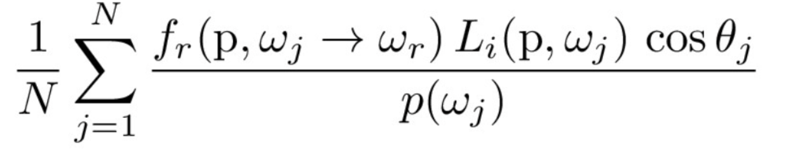 - In
PathTracer::estimate_direct_lighting_importance, we implemented direct lighting with importance sampling lights by sampling all lights directly and tracing the inverse path of the light. First, we iterate through each light source and sample directions between the light source and the hit pointhit_p. For each sample in the light source, we calculate the distance to the source light, probability density, radiance, and calculate a new ray from the hit point to the light source to check if an intersection occurs. We use the sample estimation formula above to calculate a running sumL_outof the total light samples, while also accounting for the extra factor of radiance and probability density:L_out += isect.bsdf->f(w_out, w_in_object) * radiance * max(0., cos_theta(w_in_object)) / probability_density / num_sampleand return the result.
- In direct lighting with uniform hemisphere sampling, we estimate the direct lighting on a point by sampling uniformly in a hemisphere. First, we make a coordinate space for the hit point
-
Show some images rendered with both implementations of the direct lighting function.
- Uniform Hemisphere Sampling:
- Importance Sampling:
- Uniform Hemisphere Sampling:
-
Focus on one particular scene with at least one area light and compare the noise levels in soft shadows when rendering with 1, 4, 16, and 64 light rays (the -l flag) and with 1 sample per pixel (the -s flag) using light sampling, not uniform hemisphere sampling.
l=1:
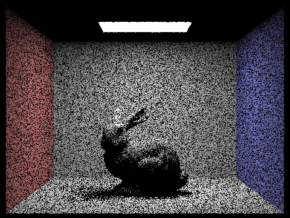l=4:
l=16:
l=64:
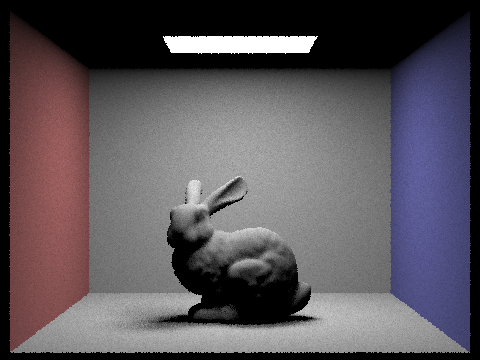
-
Compare the results between uniform hemisphere sampling and lighting sampling in a one-paragraph analysis.
- In the image produced by uniform hemisphere sampling, we see that the result is more grainy with increased noise due to the sampling over a uniform hemisphere, which samples directions randomly with uniform probability over a hemisphere. However, in the bunny image produced by importance sampling, the image is much clearer since we include the difference in light directions when sampling and weigh greater probabilities and importance towards surfaces that are hit by a light source, rather than the shadows of the image.
Part 4
- Walk through your implementation of the indirect lighting function.
- For indirect lighting, we first implement
DiffuseBSDF::sample_fwhich finds a sample for the input solid anglewiand returns the BSDF of the intersection(wo, *wi). Then, we begin to trace the multi-bounce inverse paths of the light ray and recursively determine whether the next location is a light or an object. In each recursive call, we create a newbounce_rayfrom the hit point and set its minimum t value and depth. Then, we callbvh->intersecton thebounce_rayto determine whether there is a ray intersection, in which case we make a recursive callat_least_one_bounce_radianceon existing ray and estimated ray intersection calculated from the estimator equation. Finally, we keep track of the total light emitted inL_outand return the result.
- For indirect lighting, we first implement
- Show some images rendered with global (direct and indirect) illumination. Use 1024 samples per pixel.
banana.dae:
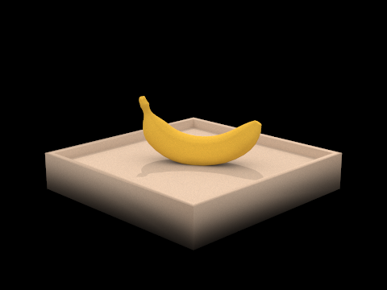blob.dae:
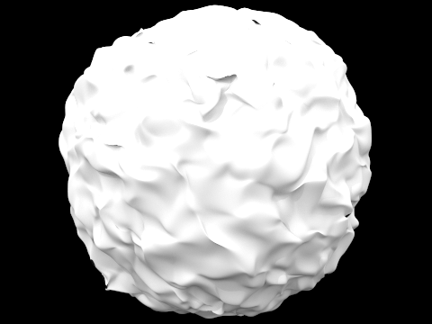spheres.dae:
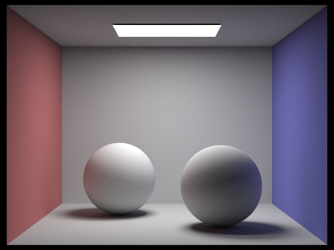
- Pick one scene and compare rendered views first with only direct illumination, then only indirect illumination. Use 1024 samples per pixel.
- Direct illumination:
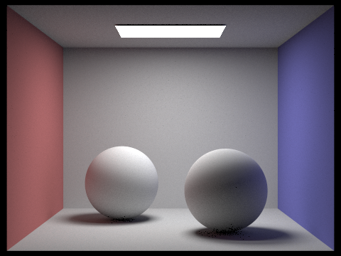 - Indirect illumination:
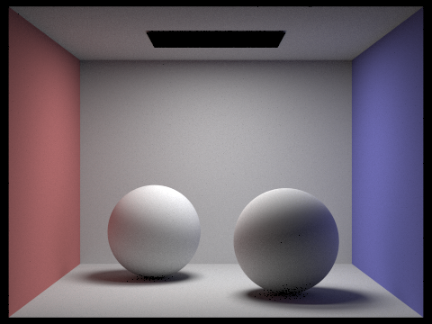
- Direct illumination:
- For CBbunny.dae, compare rendered views with max_ray_depth set to 0, 1, 2, 3, and 100 (the -m flag). Use 1024 samples per pixel.
m=0:
m=1:
m=2:
m=3:
m=100:
- Pick one scene and compare rendered views with various sample-per-pixel rates, including at least 1, 2, 4, 8, 16, 64, and 1024. Use 4 light rays.
banana.dae where s=1, l=4

banana.dae where s=2, l=4
banana.dae where s=4, l=4
banana.dae where s=8, l=4
banana.dae where s=16, l=4
banana.dae where s=64, l=4
banana.dae where s=1024, l=4
Part 5
-
Explain adaptive sampling. Walk through your implementation of the adaptive sampling.
- In adaptive sampling, the algorithm uses a fixed high number of samples per pixel and adjusts the sampling rate from the level of detail and difficulty of the image parts. For the implementation, we modified
PathTracer::raytrace_pixelso that while iterating through the samples, we check if the current sample number is divisible by the batch size of the samplesamplesPerBatch. If this case is true, then we compute the mean and standard deviation of the sample’s illuminance .
float mu = s1 / i; float sig2 = 1.f / (i - 1.f) * (s2 - s1 * s1 / i);If at any point the illuminance is less than or equal to the
maxTolerance * u, then we break from the iteration and can confidently conclude that the pixel has converged. Otherwise, we continue the tracing-and-detecting loop. - In adaptive sampling, the algorithm uses a fixed high number of samples per pixel and adjusts the sampling rate from the level of detail and difficulty of the image parts. For the implementation, we modified
-
Pick two scenes and render them with at least 2048 samples per pixel. Show a good sampling rate image with clearly visible differences in sampling rate over various regions and pixels. Include both your sample rate image, which shows your how your adaptive sampling changes depending on which part of the image you are rendering, and your noise-free rendered result. Use 1 sample per light and at least 5 for max ray depth.
banana.dae
CBspheres_lambertian.dae
Conclusion
Overall, the project was a very great learning experience in learning the different sampling methods in ray tracing as well as how light rays are traced in bounce effects of lighting. We split the work so that Michael focused more heavily on the implementation and application of the algorithms while Rachel worked on the conceptual explanations in the report.